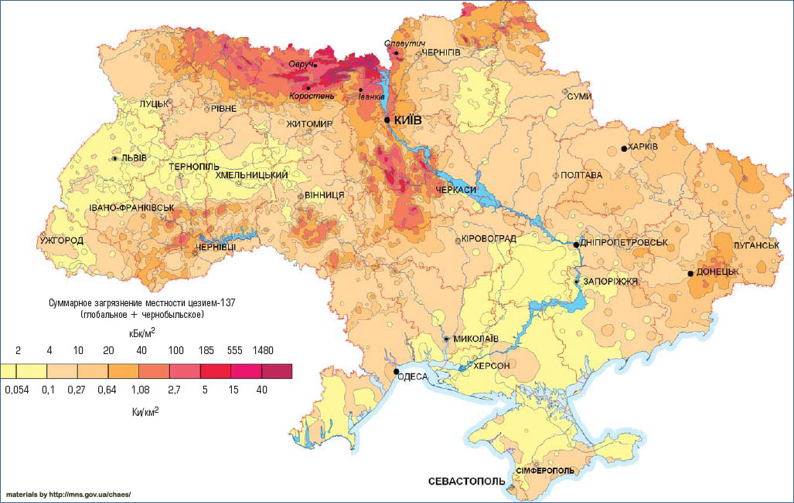
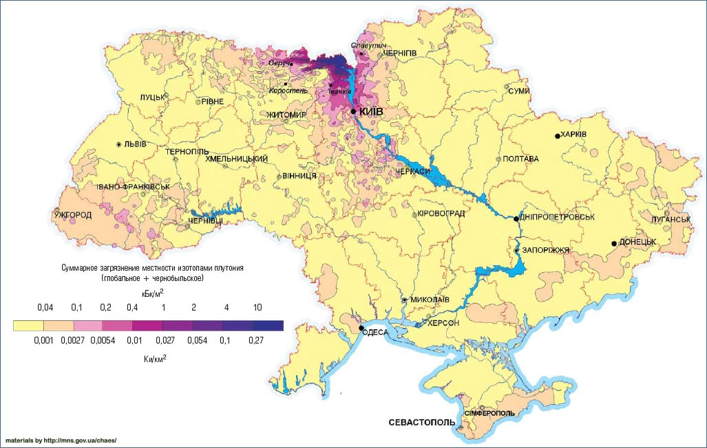

Карти забруднення радіонуклідами території Полісся та України

Представлені карти та картосхеми, що демонструють радіаційну ситуації на території України, яка склалась в результаті техногенної катастрофи на Чорнобильській АЕС. Карти характеризують стан поверхневого забруднення території України за такими радіонуклідами, яка – цезій-137 (137Cs), стронцій-90 (90Sr), америцій-241 (241Am).
{kind=link}
{kind=link}
Радіаційний стан України в період до аварії на Чорнобильській АЕС
Корисний матеріал для порівняння впливу аварії на Чорнобильській на стан довкілля України. Подані значення радіонуклідного забруднення території України в період до аварії на Чорнобильській АЕС. Карти, що наведені нижче, демонструють щільність забруднення території України за цезієм -137 та стронцієм-90.
{kind=link}
Забруднення території України до аварії на Чорнобильській АЕС 137Cs, кБк/м2
{kind=link}
Забруднення території України до аварії на Чорнобильській АЕС 90Sr, кБк/м2
Забрудення території України стронцієм-90 (90Sr) після аварії на ЧАЕС , кБк/м2
{kind=link}
Карта забруднення України стронцієм-90 (90Sr) після аварії в 1986 році
Забруднення території України цезієм-137 (137Cs) після аварії на ЧАЕС у 1986 та в 2006 роках, кБк/м2

Карта забруднення України 137Cs після аварії в 1986 році
{kind=link}
Карта забруднення України 137Cs після аварії в 2006 році
Карта забруднення України америцієм-241 (241Am)
{kind=link}
Забруднення території України америцієм-241. Сучасний стан, кБк/м2
Карта забруднення України Плутонієм

Забруднення території України плутонієм. Сучасний стан, кБк/м2
Автори карт:
- МНС України;
- Науковий центр радіаційної медицини АМН України;
- Інститут Радіаційного захисту АТН України;
- Ліхтарьов І.А., Л.М.Колган, В.Б.Бєлковський.
- Інтелектуальні системи ГЕО ;
- Табачний Л.Я., Литвиненко О.Е., В.І. Решетник
Опубліковано за матеріалами «Національної доповіді України. 20-років аварії на Чорнобильській АЕС. Погляд в майбутнє.»